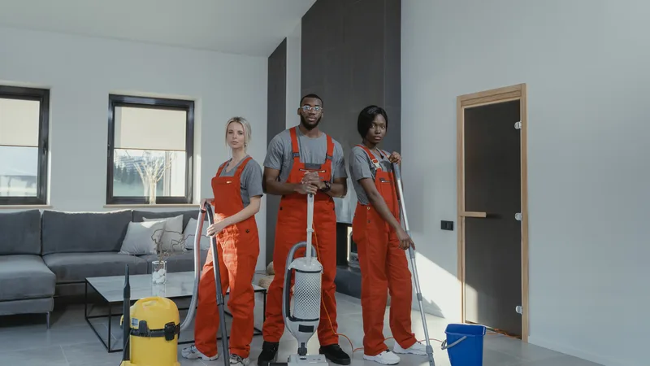
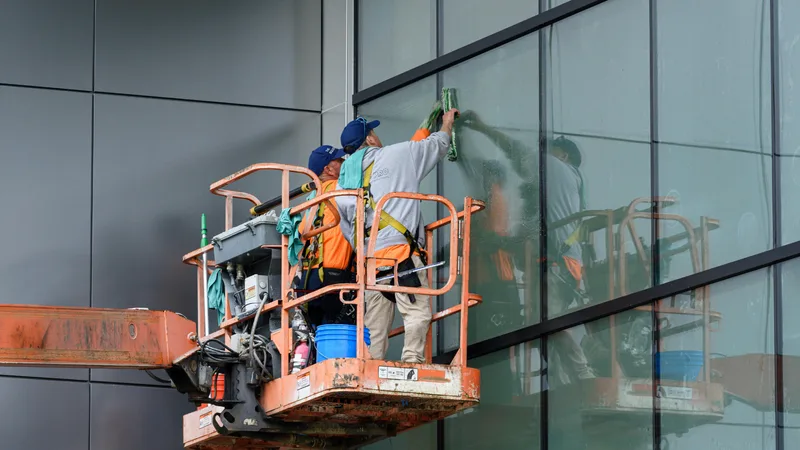

Van Ruwbouw tot Glanzend Resultaat
Gespecialiseerd in na-bouw schoonmaak, renovatie-opruiming en opleveringsschoonmaak voor particulieren en bedrijven. Wij maken uw pand instapklaar.
Schoonmaak voor elke fase van uw project
Van na-bouw schoonmaak en renovatie-opruiming tot opleveringsschoonmaak, kantoorreiniging en ramenwas in heel België. Elke opdracht begint met een duidelijke offerte.

Na-bouw schoonmaak
Bouwstof, cementresten, verfspatten en bouwafval grondig verwijderd, zodat het pand klaar is voor de oplevering.
Meer over deze dienst
Renovatie schoonmaak
Grondige reiniging na verbouwingen en renovaties, van kleine ingrepen tot een volledige woonverbouwing.
Meer over deze dienst
Opleveringsschoonmaak
Volledige eindschoonmaak voor sleuteloverdracht aan kopers of huurders, klaar voor de plaatsbeschrijving.
Meer over deze dienst
Kantoor- & bedrijfsreiniging
Periodieke of eenmalige reiniging van kantoren, winkels, showrooms en bedrijfsruimtes, ook buiten kantooruren.
Meer over deze dienst
Ramen- & glasreiniging
Streeploze reiniging van ramen, glaspuien, kozijnen en glazen gevels, voor woningen en bedrijfspanden.
Meer over deze dienst
Dieptereiniging & desinfectie
Intensieve reiniging en ontsmetting van sanitair, keukens en contactpunten voor een hygiënische omgeving.
Meer over deze dienst
Algemene huisschoonmaak
Grondige schoonmaak van uw woning of appartement, eenmalig of op regelmatige basis.
Meer over deze dienstIets anders nodig?
Staat uw vraag er niet bij? Beschrijf uw situatie en we kijken wat mogelijk is.
Neem contact op
Een schoon resultaat, zonder gedoe voor u
Na een bouw of verbouwing wilt u vooral één ding: dat het klaar is. TOP Cleaning neemt de laatste fase uit handen met professioneel materiaal, vakkundige medewerkers en een duidelijke afspraak vooraf.
- Flexibel inplanbaar, ook 's avonds, 's nachts en in het weekend
- Eigen professioneel materiaal en milieuvriendelijke producten
- Heldere offerte vooraf, zonder verrassingen achteraf
- Eindcontrole van het resultaat samen met u
Voor wie werken wij?
Aannemers en projectontwikkelaars
Een betrouwbare partner voor de eindschoonmaak van uw werven, afgestemd op uw opleverplanning.
Bedrijven en vastgoedbeheerders
Vaste of eenmalige reiniging van kantoren, winkels, showrooms en gemeenschappelijke delen.
Particulieren
Na uw verbouwing, bij een verhuis of voor een grondige schoonmaak van uw woning.
Zo werkt het
Een korte en duidelijke werkwijze, van uw eerste bericht tot de oplevering.
Aanvraag
U belt, stuurt een WhatsApp met foto's of vult het formulier in.
Offerte
We bespreken de vervuiling en de planning en bezorgen u een duidelijke prijs.
Uitvoering
Ons team werkt op het afgesproken moment, ook 's avonds, 's nachts en in het weekend.
Oplevering
We controleren het resultaat en verbeteren wat nodig is.

Uw schoonmaakbedrijf voor bouw, renovatie en oplevering
TOP Cleaning is een schoonmaakbedrijf voor heel België, gespecialiseerd in na-bouw schoonmaak, bouwreiniging, schoonmaak na renovatie en eindschoonmaak. Wij verwijderen bouwstof, cementsluier, verf- en kalkresten en maken woningen, appartementen en bedrijfspanden klaar voor oplevering of verhuis.
Naast bouwgerelateerde reiniging verzorgen we kantoorschoonmaak, bedrijfsschoonmaak, ramenreiniging als glazenwasser, dieptereiniging en huisschoonmaak in heel België.
- Na-bouw schoonmaak en bouwreiniging voor aannemers en bouwheren
- Eindschoonmaak en verhuisschoonmaak met checklist voor de plaatsbeschrijving
- Schoonmaak na verbouwing: stofvrij en klaar om te wonen
- Kantoorschoonmaak, bedrijfsreiniging en winkelreiniging
- Glazenwasser en ramenreiniging voor woningen en bedrijven
- Dieptereiniging, ontkalken en desinfectie
Veelgestelde vragen
Wat doet TOP Cleaning precies?
TOP Cleaning is gespecialiseerd in na-bouw schoonmaak, renovatie schoonmaak en opleveringsschoonmaak, aangevuld met kantoorreiniging, ramenreiniging, dieptereiniging en huisschoonmaak. We werken voor particulieren, aannemers en bedrijven in heel België.
Wat is het verschil tussen na-bouw schoonmaak, renovatie schoonmaak en opleveringsschoonmaak?
Na-bouw schoonmaak (bouwreiniging) verwijdert zware bouwvervuiling zoals cementsluier, mortel en verf na een nieuwbouw. Renovatie schoonmaak maakt een woning stofvrij na een verbouwing. Opleveringsschoonmaak of eindschoonmaak is de laatste grondige reiniging voor verhuur, verkoop of sleuteloverdracht.
In welke regio's werken jullie?
In heel België, onder meer in Brussel, Antwerpen, Gent, Brugge, Leuven en Mechelen. Ligt uw project elders, neem dan gerust contact op.
Hoe snel krijg ik een offerte?
Meestal binnen 24 uur. Foto's van de ruimte via WhatsApp helpen ons om sneller een correcte prijs te maken. De offerte is gratis en vrijblijvend.
Wanneer zijn jullie bereikbaar en beschikbaar?
Ja, TOP Cleaning is 24 uur per dag, 7 dagen per week bereikbaar en plant opdrachten op het moment dat het voor u het best past, ook 's avonds, 's nachts en in het weekend.
Moet ik zelf materiaal of machines voorzien?
Nee. Wij brengen alles mee. Op de werf is toegang tot water en elektriciteit voldoende.
Hoe wordt de prijs bepaald?
De prijs hangt af van de oppervlakte, de mate van vervuiling, de bereikbaarheid en de gewenste taken. We geven u vooraf een duidelijke prijs, zodat u niet voor verrassingen komt te staan.
Hoeveel kost een schoonmaak na verbouwing of nieuwbouw?
Dat hangt af van de oppervlakte, de vervuilingsgraad, het aantal ramen en de bereikbaarheid. Stuur foto's via WhatsApp of vraag een offerte aan en u ontvangt een duidelijke vaste prijs, zonder verrassingen achteraf.
Een offerte voor uw pand?
Beschrijf kort uw project of stuur foto's via WhatsApp. We reageren snel met een voorstel op maat.